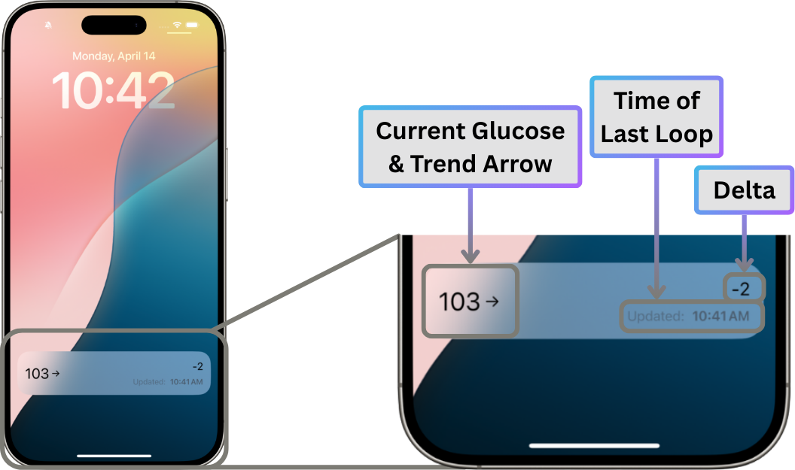
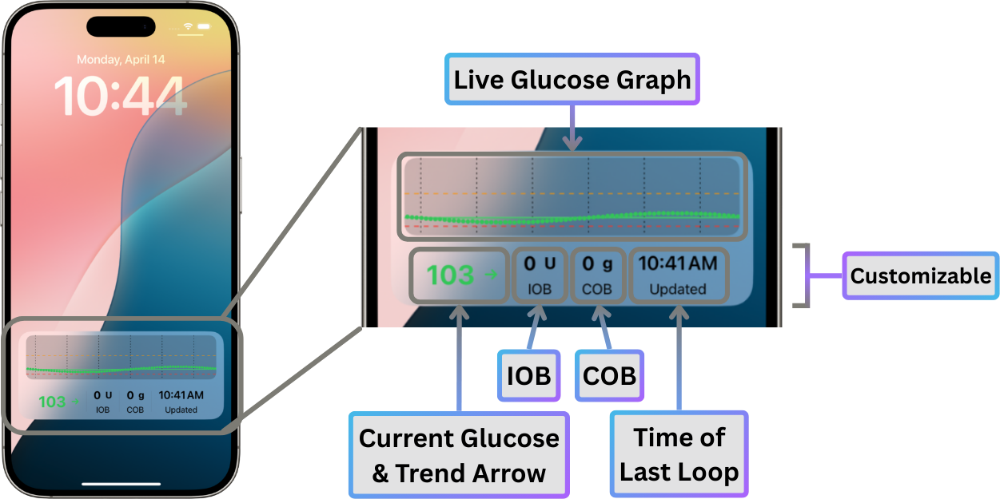
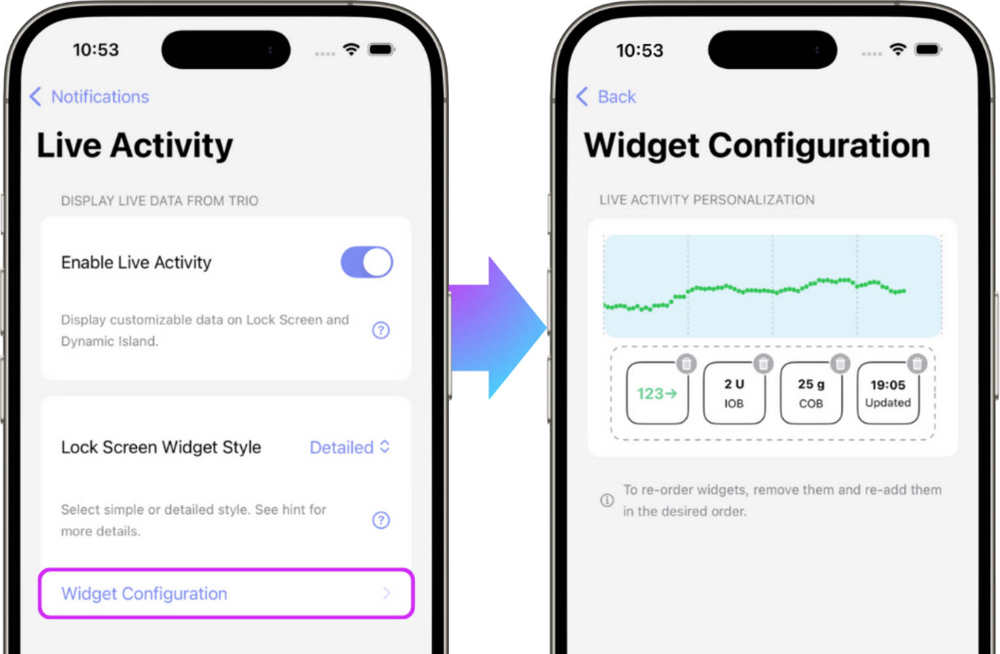

Trio's simple widget displays your current glucose reading, trend arrow, delta, and the timestamp of the current reading.

The detailed widget displays your live glucose graph.

You also have the ability to customize what information is provided below the graph and the order it is displayed, including:
- Current glucose reading & trend arrow
- IOB
- COB
- Time of Last Loop Cycle
Choosing "Detailed" will expose a Widget Configuration option. When selected, you'll have multiple configurations to choose from.
